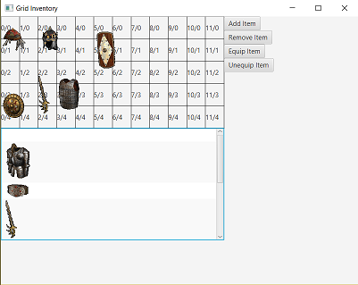
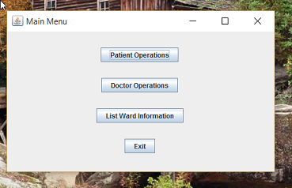

Classes I Have Taken
Here is a list of the classes I have completed for my major and possible minor, as well as other notable classes:
Computer Science Classes
- CMPT 111: Intro To Computer Science and Programming
- CMPT 115: Principles of Computer Science
- CMPT 214: Programming Principles and Practice
- CMPT 260: Mathematical Logic and Computing
- CMPT 270: Developing Object-Oriented Systems
- CMPT 280: Intermediate Data Structures and Algorithms
- CMPT 381: Implementation of Graphical User Interfaces
- CMPT 394: Simulation Principles
English Classes
- ENG 111: Literature and Composition Reading Poetry
- ENG 113: Literature and Composition Reading Narrative
- ENG 277: Literary Uses of Mythology
Other Classes of Note:
- ECON 111: Price Theory and resource Allocation
- ECON 114: Money and Income
- MATH 110: Calculus I
- STAT 245:Introduction to Statistical Methods
- MUS 111: History of Popular Music
Projects of Note:

My project for CMPT381. I tried to make a Grid Inventory, similar to the ones in ARPG Games. It mostly works, though there are some bugs with equipping, and doesn't look that pretty. It is something I want to come back to, as the underlying idea is very close to what I wanted.

An Assignment I worked on for CMPT 280. Just a Simple Main Menu with the different functions of the Hosptial.